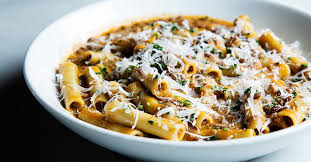

Lentil Pasta

Description
This dish combines the comfort of a soup with the ease of a pasta
to make one of my all time favorite week night recipes.
Ingredients
- 2 tbs Olive Oil, Plus More for Serving
- 1 Small Yellow Onion, Finely Chopped
- 1 Medium Carrot, Peeled and Finely Chopped
- 1 Garlic Clove, Finely Minced
- Kosher Salt and Freshly Ground Black Pepper, to Taste
- 1 Cup Brown Lentils, Rinsed
- 1 tbs Tomato Paste
- 3 Thyme Sprigs
- 1 Fresh Bay Leaf
- Pinch Crushed Red Pepper Flakes
- 6.5 Cups of Water, For 1 lb of Pasta
- 16 Ounces of Pasta
- 1.5 Cups of Whole Milk
- 1 tbs Fresh Parsley, Finely Chopped
- Grated Parmesan, for Serving
Directions
- In a medium saucepan, heat the olive oil over medium-high heat. Add the onion and carrot, and cook, stirring often until soft but not brown, 3 to 5 minutes. Add the garlic and cook for 1 minute. Season with salt and pepper, and add the lentils, tomato paste, thyme, bay leaf and red pepper flakes. Cook for 3 to 4 minutes to allow the flavors to meld. Add the water and bring to a boil. Reduce the heat to medium low and simmer with the lid slightly ajar, until the lentils are tender, 40 to 45 minutes.
- Bring the lentils to a boil and add the pasta and milk. Cook, uncovered, stirring often so that the pasta doesn't stick to the bottom, until the pasta is al dente and the liquid has reduced to a creamy, ragu-like sauce, 10 to 12 minutes. Discard the bay leaf and thyme sprigs.
- Divide the pasta among serving bowls and garnish with the parsley, Parmesan and more olive oil.
Return Home